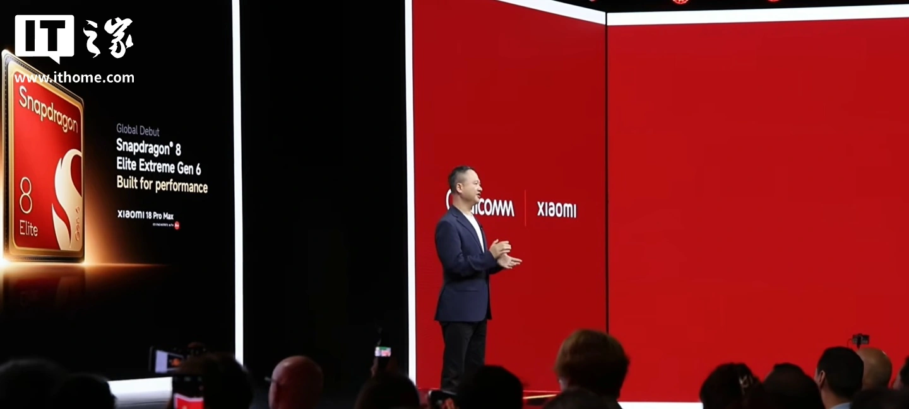
THE TECH EDIT
기술의 변화, 매일 한눈에.
카메라 · 스마트폰 · AI, 해외 테크 소식을 모아 전합니다.
최근 발행2026-09-23
새로 들어온 소식
LATEST STORIES
최신 뉴스
전체 3,220개 기사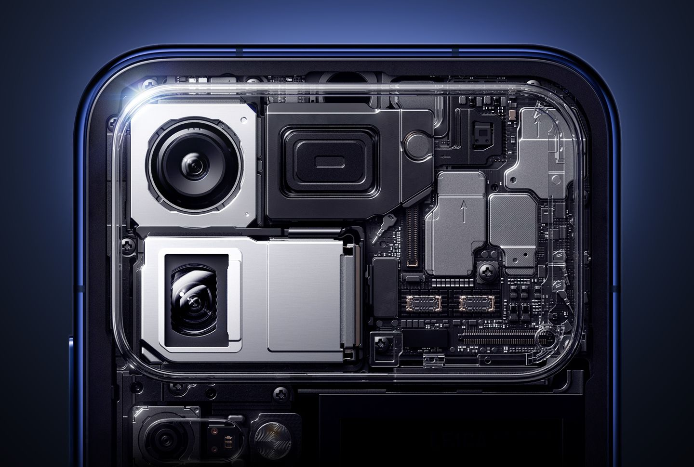
샤오미 18 프로 시리즈, 듀얼 200MP 메인 및 망원 센서 탑재 확정
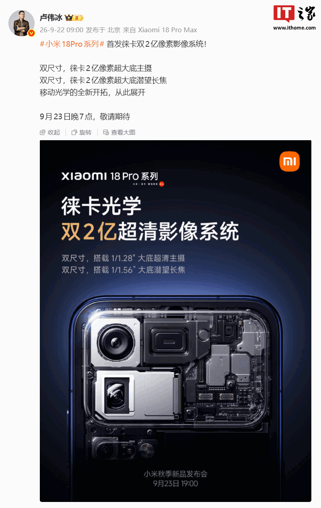
Xiaomi 18 Pro 시리즈 스마트폰, 라이카 듀얼 2억 화소 이미징 시스템 최초 탑재: 1/1.28인치 대형 센서 메인 카메라 + 1/1.56인치 페리스코프 망원

vivo X500 Ultra 스마트폰, 내년 3~4월 출시 예정

vivo X500 Pro/Pro Max 스마트폰, 16+512GB, 16+1TB 버전 추가, 7999위안부터

vivo X500 Pro 시리즈 스마트폰 출시: Dimensity 9600 Pro 플래그십 칩셋 세계 최초 탑재, 6,499위안부터
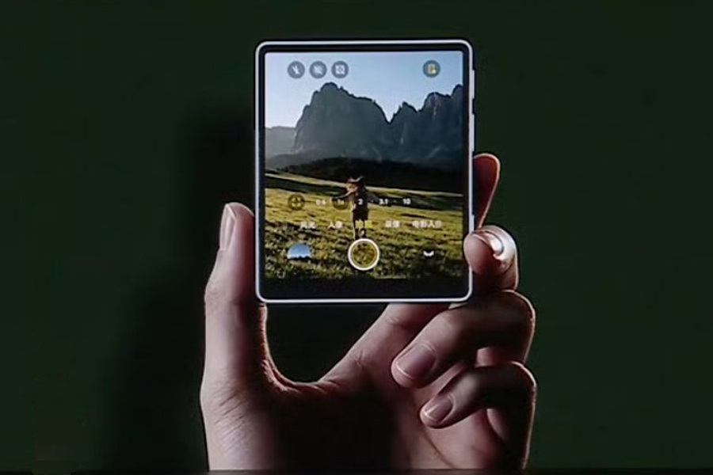
비보 카메라 스크린, X500 시리즈에 샤오미 18 프로 후면 디스플레이 탑재
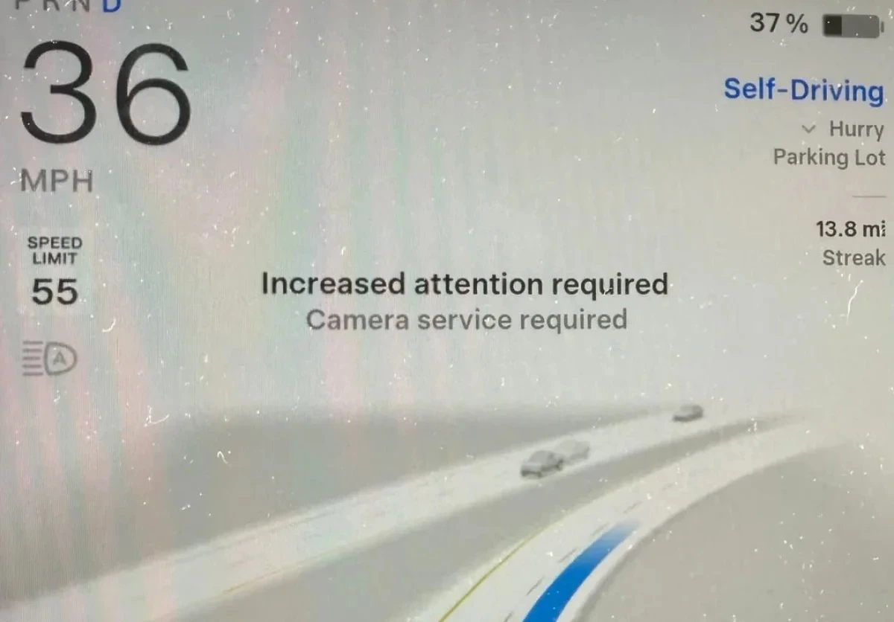
카메라 오염 오보, 테슬라 FSD v14.3.9 소프트웨어 버그 발생
Snapchat, Lens+ 구독 서비스 업데이트로 '채팅 메시지를 노래로 전환' 등 다양한 생성형 AI 기능 추가
싱쓰 반도체, 5G RedCap 칩으로 경량 IoT에 주력하며 산업 상용화 기반 강화
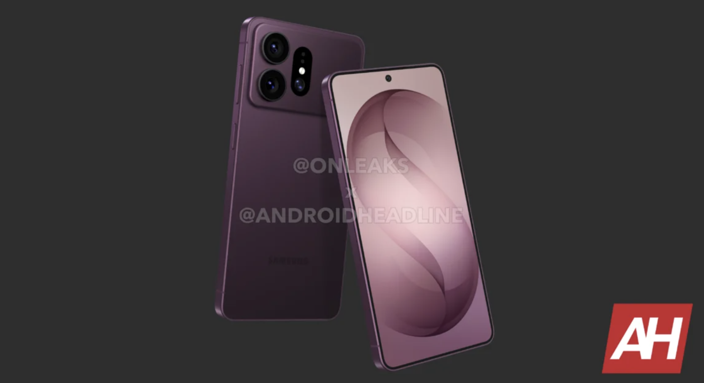
Samsung Galaxy S27 시리즈 스마트폰 스토리지 정보 유출, Ultra 모델만 16GB RAM 탑재
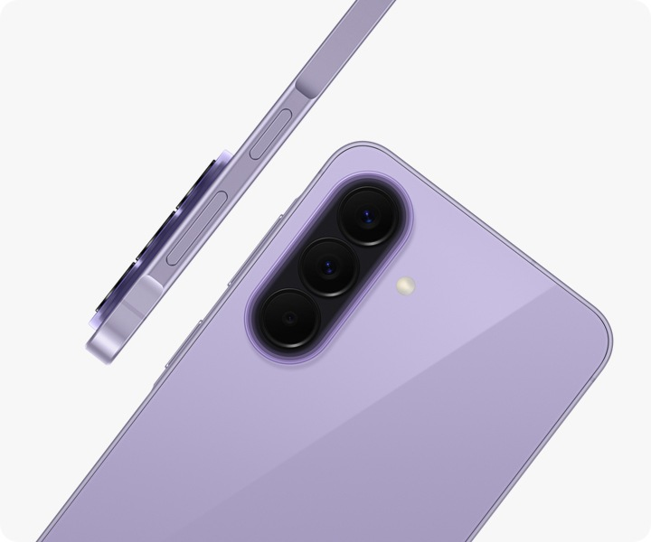
Samsung, Galaxy A 시리즈 스마트폰 배터리에 보안 식별 칩 탑재 예정
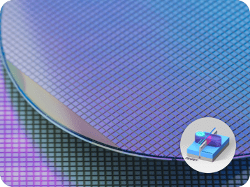
Samsung 파운드리, HBM 베이스 다이 수요 대응 위해 4nm, 2nm 생산 능력 확대 고려 중인 것으로 알려져
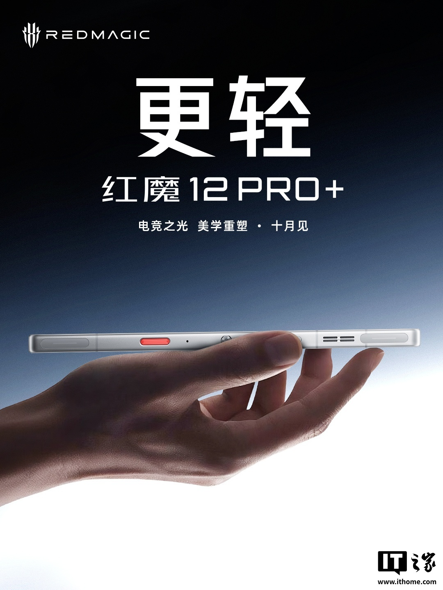
레드매직 12 Pro+ 스마트폰, 퀄컴 6세대 스냅드래곤 8 슈퍼 엘리트 칩 탑재 공식 발표, "역대 최고의 레드매직 플래그십" 표방

Oppo Find X10, 듀얼 200MP 카메라, 0.99mm 베젤, Dimensity 9600M 칩셋 탑재하고 공개

Oppo Find X10 Pro Max, 세계 최초 2억 화소 카메라 3개 탑재 스마트폰으로 공식 발표
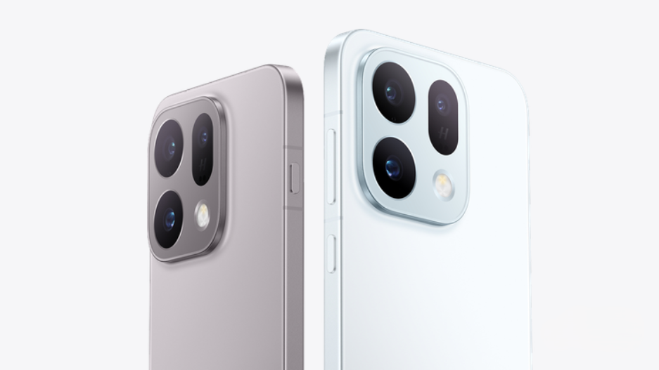
Oppo Find X10 E, Dimensity 9500s, 7025mAh 배터리, 트리플 50MP Hasselblad 카메라 시스템 탑재하고 데뷔
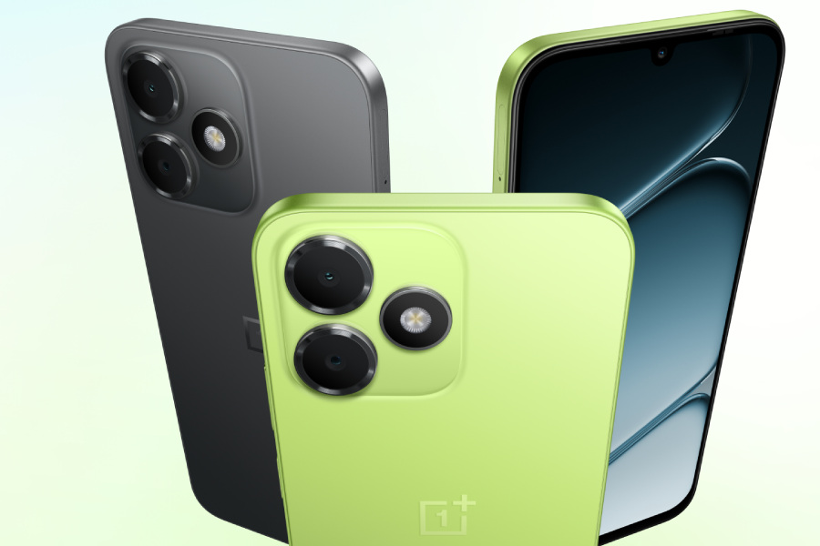
원플러스, 새로운 보급형 스마트폰에 유니SOC 칩 탑재로 놀라움 선사
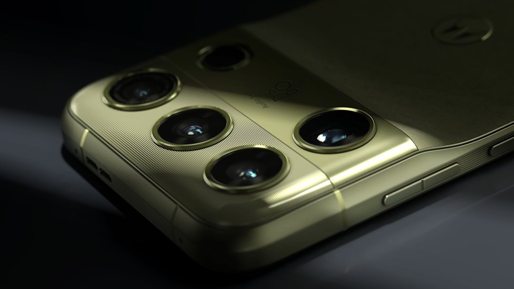
모토로라 시그니처 27 티저, 독특한 카메라 레이아웃, 200MP LYTIA 센서, "뱅앤올룹슨 오디오" 공개
루웨이빙, 새로운 Xiaomi 18 Pro 시리즈 스마트폰 촬영 샘플 공개, 전 모델 라이카 듀얼 2억 초고화질 이미징 시스템 탑재
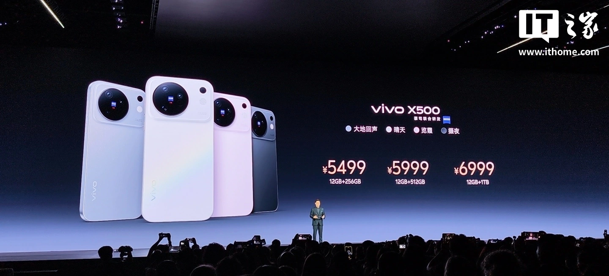
IT 모닝 브리핑 0922: 셴위(闲鱼), "음란물 유인 보도"에 답변; vivo X500 시리즈 스마트폰 5,499위안부터 출시; "코드 무단 전송" 의혹 후 지푸 ZCode 오픈소스화; AMD 시가총액 사상 최초 1조 달러 돌파...
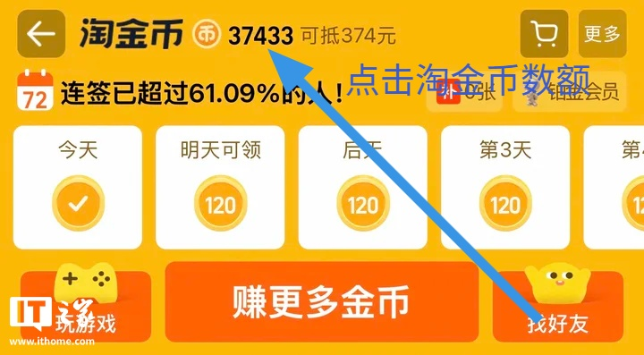
居然즈자 한정 구매: iPhone 18 Pro 티몰 9,799위안, 12개월 무이자 할부
검색 결과가 없습니다
다른 검색어를 입력하거나 필터를 초기화해 보세요.